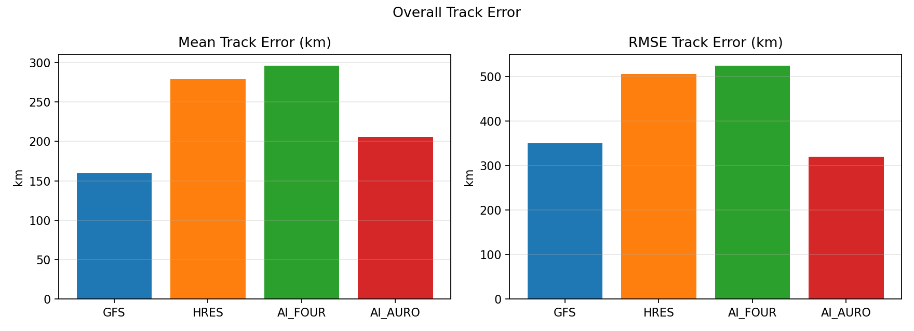
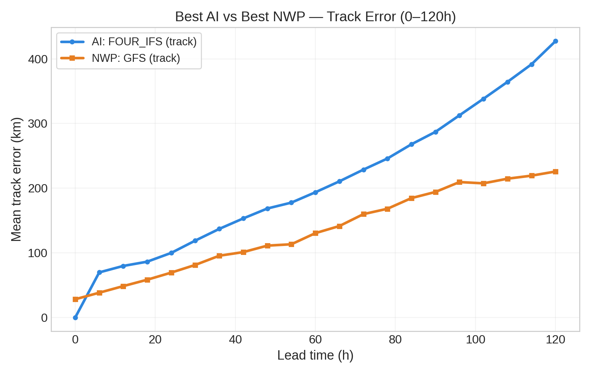
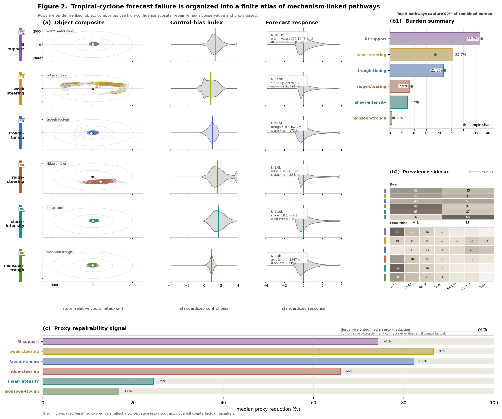
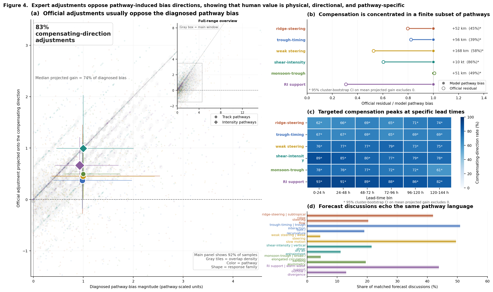
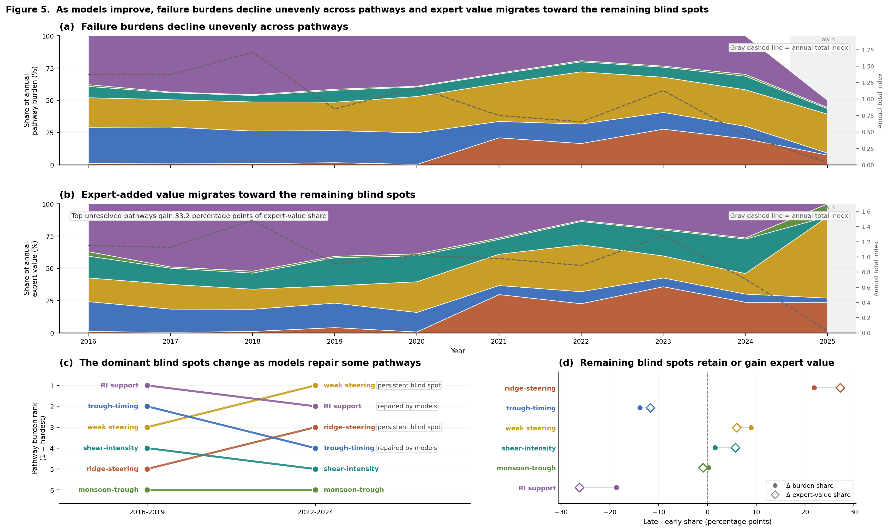

外部背景：`AIvsNWP` 说明专家仍然更强
在 `/root/AIvsNWP` 的历史比较中，`OFCL`、`GFS` 与 `AI_FOUR` 在同一评价框架下的总体路径误差如下。 这里最有价值的不是单看均值，而是对比均值与中位数：它能告诉我们误差分布是否存在长尾。
解读：`OFCL` 的均值最低，说明总体最好；`GFS` 的中位数虽然不差，但均值显著更高，说明存在更重的尾部误差。 这正是专家价值最可能体现的地方：不只是提高平均水平，而是抑制灾难性偏差。
这份汇报要讲清楚一个完整故事。第一步，我们先证明专家预报的优势依然真实存在；第二步，我们说明专家的修正不是偶然， 而是落在稳定、可识别的误差路径上；第三步，我们在本项目中设计一套 可执行、可验证、可集成 的结构化中间接口，让 LLM 学习专家如何修正 guidance， 并检验这种“学会推理过程”的能力能否真正改善下游 forecast。
因为“模型已经能给出预报”并不等于“模型已经吸收了专家决策层的价值”。 从更广的业务比较到本项目自己的正式测试，专家官方预报都仍然保有明显优势，尤其体现在尾部风险控制与整体稳定性上。
在 `/root/AIvsNWP` 的历史比较中，`OFCL`、`GFS` 与 `AI_FOUR` 在同一评价框架下的总体路径误差如下。 这里最有价值的不是单看均值，而是对比均值与中位数：它能告诉我们误差分布是否存在长尾。
解读：`OFCL` 的均值最低，说明总体最好；`GFS` 的中位数虽然不差，但均值显著更高，说明存在更重的尾部误差。 这正是专家价值最可能体现的地方：不只是提高平均水平，而是抑制灾难性偏差。
在当前项目的 held-out confirm 上，第一阶段冻结的 baseline 与专家官方预报之间依旧存在显著 gap。 这说明二阶段要解决的问题是真实存在的，而不是外部项目里的偶然现象。
这意味着 Phase 2 的目标不是“再把模型直接调得更准一点”，而是理解并恢复专家在这些差距背后的决策补偿机制。


`/root/MOSNet` 的 pathway 分析给了这一层证据：专家并不是在“随机修一点”，而是在一些稳定可识别的误差路径上， 长期、方向一致地做补偿。
| 路径 | 样本数 | 补偿方向一致率 | 路径误差改善 |
|---|---|---|---|
| shear-intensity decoupling | 1605 | 83.4% | 86.4% |
| RI support underestimation | 2933 | 90.3% | 69.3% |
| weak steering persistence | 1669 | 76.6% | 58.1% |
| monsoon-trough organization | 532 | 75.1% | 48.7% |
| ridge-steering displacement | 1159 | 66.2% | 44.7% |
| trough-timing misalignment | 1888 | 67.6% | 39.0% |



这项研究围绕一个清晰问题展开：结构化过程监督是否能帮助模型学习专家的决策过程，并进一步改善轨迹预报。
第一阶段我们已经能训练出直接输出严格 forecast table 的模型，但这只能回答“模型能否拟合输出结果”， 不能回答“模型是否学到了专家在模式分歧、转向风险和轨迹修正上的判断过程”。如果没有这一步， 我们很难知道模型是在做可解释的决策，还是只是在记忆某种输出分布。
因此二阶段不直接训练长文本 reasoning，而是把专家决策过程压缩成可验证的结构化 diagnostics / decision states。 只有当这套中间接口在 oracle 注入时能改善预报，且 predicted diagnostics 也能恢复一部分增益时， 我们才认为模型真的学到了一部分“如何做判断”。
当前结果表明，最有效的不是更宽、更抽象的 schema，而是更窄、更可执行的 slot-locked correction interface。 这条线已经在 held-out 上完成确认，并成为当前推荐主线；剩余问题已收敛到少数弱字段，而不是整体方案仍不成立。
所有实验共享同一套 canonical 数据底座；不同阶段的差异不在于换数据，而在于从同一记录中导出的训练视图与评价目标不同。
| 数据视图 | train | val | test | 在研究中的作用 |
|---|---|---|---|---|
| `forecast_only` | 3959 | 1354 | 1613 | Phase 1 严格预报主任务；提供正式 baseline；也是所有 forecast integration compare 的共同输入底座。 |
| `diagnostic_slot_correction_only` | 3959 | 1354 | 1613 | Phase 2A/2B 的关键接口；验证 slot-locked track correction 是否真实有用。 |
| `diagnostic_slot_turn_correction_only` | 3959 | 1354 | 1613 | Phase 2C 的 executable extension；在 slot correction 基础上恢复 turning-related 决策状态。 |
| `reasoning_only` | 385 | 138 | 148 | 未来 explanation / narrative reasoning 阶段的数据接口。当前规模较小，因此不适合作为 Phase 2 主线。 |
这里展示的不是抽象 schema，而是真实样本。可以看到我们并不是让模型“凭空思考”， 而是把观测、环境诊断和 guidance 组织成一个结构化提示，再要求模型输出严格可解析的结果。
所有阶段共享同一证据底座，包括当前位置、环境诊断、卫星/侦察观测和 ATCF / HRES guidance。
先让模型输出可执行的中间判断状态，包括 1 个 `turning_signal` 与 12 个 `slot_1..slot_6` 的 lat/lon 修正桶。
再把这些结构化判断渲染成对已有 guidance 的受约束修正，不允许改时槽，不允许顺带改 intensity。
最终仍然回到严格可解析的官方预报表，这样才能和 Phase 1 baseline 与专家官方预报直接比较。
## Time Anchor - Advisory issue Day01 2100Z ## Current State - Position 28.0°N 86.6°W | Motion WEST-NORTHWEST at 2 kt | Intensity 30 kt / 1007 mb ## Environmental Diagnostics - Vertical wind shear: 20.1 m/s (strong) - Upper-level divergence: -0.22 ×10⁻⁵ s⁻¹ (weak) - Sea surface temp / OHC: 26.4 °C (low) - Subtropical high: 58050 gpm (strong) - Westerly trough: 1893 gpm (strong) ## Observation Evidence - Coverage: GOES + Recon available; missing ASCAT ## Model Guidance ATCF guidance: - Day02 0600Z 26.5°N 84.9°W | 28.5 kt - Day02 1800Z 25.5°N 84.5°W | 28.4 kt - Day03 0600Z 24.0°N 84.0°W | 25.8 kt - Day03 1800Z 23.0°N 83.2°W | 21.5 kt - Day04 0600Z 22.3°N 81.4°W | 19.9 kt
Official forecast: - Day02 0600Z | 27.7°N 86.7°W | 35 kt - Day02 1800Z | 26.4°N 86.6°W | 35 kt - Day03 0600Z | 24.8°N 86.2°W | 30 kt - Day03 1800Z | 23.7°N 85.7°W | 30 kt - Day04 0600Z | 22.6°N 84.3°W | 25 kt
## Time - Advisory issue Day01 2100Z ## Steering - Subtropical high: 58050 gpm (strong) - Westerly trough: 1893 gpm (strong) - Vertical wind shear: 20.1 m/s (strong) ## Guidance ATCF guidance: - Day02 0600Z 26.5°N 84.9°W ... - Day02 1800Z 25.5°N 84.5°W ... - Day03 0600Z 24.0°N 84.0°W ... ## Turning Signal Cues - ATCF: early south-east, late south-east - heading change 39 deg - notable turn signal ## Slot-Locked Track Correction Cues - keep slot count/order fixed - predict lat/lon correction bucket only - do not change timing or intensity
{"turning_signal":"steady","slot_1_lat_bias_vs_consensus_bucket":"north_small","slot_1_lon_bias_vs_consensus_bucket":"west_small","slot_2_lat_bias_vs_consensus_bucket":"north_small","slot_2_lon_bias_vs_consensus_bucket":"west_small","slot_3_lat_bias_vs_consensus_bucket":"north_small","slot_3_lon_bias_vs_consensus_bucket":"west_small","slot_4_lat_bias_vs_consensus_bucket":"north_small","slot_4_lon_bias_vs_consensus_bucket":"west_large","slot_5_lat_bias_vs_consensus_bucket":"near_consensus","slot_5_lon_bias_vs_consensus_bucket":"west_large","slot_6_lat_bias_vs_consensus_bucket":null,"slot_6_lon_bias_vs_consensus_bucket":null}
结论的可信度来自严格的阶段划分、清晰的因果问题拆解，以及每一阶段都必须满足的对照与 go/no-go 条件。
先做 oracle compare，只问一个问题：如果把某种结构化决策状态直接交给 forecast 模型， 它能不能显著降低 `track_error_km` 和 `mean_track_diff_vs_official_km`。
只有当接口本身被证明有效，才训练 predicted diagnostic adapter。 这一步回答的是：模型能否从同样的输入证据中恢复这套过程信息，并把一部分 oracle 增益带回 forecast。
只有在 2A 和 2B 都通过后，才允许扩展 schema。并且我们已经用负结果证明： 当前阶段不能简单扩成 richer schema，必须沿“窄而可执行”的接口继续推进。
在完成数据与方法说明后，最重要的是明确：当前结果已经回答了哪些问题，又把剩余问题收缩到了什么范围。
我们已经证明，某类结构化 diagnostics 不只是让标签更好看，而是可以真实降低 forecast track 主指标。 关键转折点是 `oracle slot_correction` 首次显著通过，说明接口本身是有效的。
`track_core v1` 这类 richer schema 已被证明不是当前正确主线。真正有效的是更窄、可执行、slot-locked 的轨迹修正接口， 后续扩展也必须沿 executable interface 这条线走。
当前主线不仅 forecast 指标改善，而且 standalone contract 已修稳，`turning_signal` 的 exact accuracy 与 macro-F1 都显著提升。 这说明模型学到的是可执行的中间判断状态，而不只是表面输出。
当前 blocker 不再是 JSON parseability，也不是 generic redesign，而是 12 个 slot bucket 字段中最弱的语义分辨率， 尤其是 `lat bucket` 仍未真正修好。
这项工作不是把长文本 reasoning 直接塞回 forecast 主任务，而是先验证：模型能否学会专家使用的结构化判断节点， 再看这些判断节点能否稳定改善下游 forecast。
项目长期目标是三段式链路：先输出结构化 diagnostics，再生成严格 forecast，最后才生成 explanation。 这意味着 reasoning 是解释层，不是当前主决策层。
reasoning 文本覆盖率低、自动评估难、容易破坏严格 forecast 格式，因此当前阶段的更稳做法是先学习结构化 decision state， 再把 explanation 放到后续阶段。
这里的推理，不等于生成一段像专家的话，而是学会专家依赖的关键判断节点、诊断因子和决策结构。 所以我们重点看的是 contract、macro-F1、turning signal、bucket semantics，而不是 prose 是否像人。
当前阶段已经过了“找接口”和“修 contract”的部分。后续最合理的动作是冻结已验证主线， 只对最弱的 bucket 语义做定向提升。
这条主线不是凭直觉选出来的，而是通过多轮负结果与正结果共同收敛出来的。
当前最重要的证据已经不再是 sample-200 exploratory signal，而是 `v3` 的 held-out full confirm。 因此这里统一以 `n=1454` 的 confirmed 口径报告当前 mainline，并保留 `v1` 作为稳定 control。
`predicted slot_turn_track_plus_baseline_intensity_scale_1p20_v3`
145.58 kmforecast track error
较 baseline 改善 36.33 km / 20.0%同一条 confirmed mainline，`n=1454`
125.26 kmmodel-vs-official track diff
较 baseline 收窄 38.74 km / 23.6%同一条 confirmed mainline 的 standalone 诊断结果
1.0000 / 0.8256`json_parse_rate` / `turning_signal macro-F1`
说明中间判断不只是后处理伪造出来的| variant | sample | joint exact | mean macro-F1 | track error (km) | vs official (km) | strict parseable | 定位 |
|---|---|---|---|---|---|---|---|
| baseline_forecast_sft_v2 | 1454 | N/A | N/A | 181.91 | 164.00 | 0.1960 | Phase 1 参考基线 |
| diagnostic adapter: slot_turn_correction_v3 | 1613 | 0.023 | 0.3418 | N/A | N/A | 1.0000 | 过程学习证据 |
| predicted_slot_turn_track_plus_baseline_intensity_scale_1p20_v3 | 1454 | 0.023 | 0.3418 | 145.58 | 125.26 | 1.0000 | 当前 confirmed mainline |
| predicted_slot_turn_track_plus_baseline_intensity_scale_1p20_v1 | 1454 | 0.024 | 0.3246 | 151.96 | 131.04 | 1.0000 | 稳定 control |
| expert_official | 1454 | N/A | N/A | 97.43 | 0.00 | 1.0000 | 专家参考上限 |
长度越短越好。这里统一使用 `n=1454` 的 confirmed 口径，对比 baseline、当前主线、旧主线 control 和 expert official。
当前阶段并不以长文本 reasoning prose 为目标；推理学习的证据，体现在模型是否能恢复并稳定输出 专家在预报时依赖的结构化中间判断状态。
因为 reasoning 在项目设计里是 Phase 3 的解释层，而不是 Phase 2 的主决策层。当前 `reasoning_only` 数据规模只有 `train 385 / val 138 / test 148`，远小于 Phase 2 各 diagnostic view 的 `3959 / 1354 / 1613`。 所以现在更稳、更可信的说法是： 我们已经证明模型能学会一部分专家的结构化判断过程，但还没有进入 explanation prose 的系统训练阶段。
只看均值容易把“少量灾难性失败”平均掉，因此这里额外报告中位数、格式稳定性和字段级分布， 用来判断改进到底是整体性的，还是只是少数样本的偶然波动。
结论：当前主线不只是把均值往下拉，也把中位数往下拉，说明改善不是少量样本造成的假象。
当前主线不仅更接近专家，而且在输出 contract 上已经达到可部署的稳定性。这一点对学术上讲“可执行接口”非常关键。
这说明 `v3` 的收益主要仍来自 `lon bucket`，而不是原假设中的 `lat bucket repair`。它已经足够支撑主线升级，但还不够说明 bucket semantics 已经完全收口。
这些负结果不是附属信息，而是研究收敛的重要依据：它们解释了为什么当前最合理的策略是继续收窄，而不是重新发散。
当前最合理的计划不是回到 redesign；`v3 full confirm` 和 post-confirm semantic audit 已经说明主线可以稳定进入 RL 准备阶段。 但更稳妥的顺序仍然是：先把 reward 与 guardrail 冻结，再正式启动 RL 训练。
“当前已经可以开始准备 RL。更准确地说：我们不会再把 `lat-only cleanup` 作为 RL 前的 mandatory blocker， 而是直接以当前 confirmed mainline 为基础，先冻结只绑定 dual-track gate 的 RL objective 与 guardrail， 然后再启动 RL 训练。”
本页面综合使用外部背景数据、专家修正机制数据和本项目正式运行结果，分别服务于“背景问题”“机制解释”和“当前进展”三个层面。
背景对比数据来自 `/root/AIvsNWP/outputs/eval_overall_v2_ofcl.csv`，用于证明专家官方预报在大范围历史比较中仍有明显优势。 页面中嵌入的现成图已复制到 `docs/assets/phase2_briefing/`，避免依赖外部绝对路径。 专家修正机制数据来自 `/root/MOSNet/outputs/paper1_full/data/figure4/figure4_expert_summary.csv`，用于证明专家修正不是随机行为，而是沿稳定 pathway 做系统补偿。 当前项目的 confirmed mainline 数值来自 `runs/phase2_diagnostic_slot_turn_correction_v3_confirm_20260421_090002/evals/forecast_integration_compare_sample1613_seed3407.json` 与对应的 `runs/phase2_diagnostic_slot_turn_correction_v3_confirm_20260421_090002/evals/diagnostic_eval_summary_sample1613_seed3407.models/01_diagnostic_adapter_slot_turn_correction_v3.json`。 `v1` 的 retained control 数值来自 `runs/phase2_diagnostic_slot_turn_correction_v1_confirm_20260420_141813/evals/forecast_integration_compare_sample1613_seed3407.json` 与对应的 `diagnostic_eval_summary_sample1613_seed3407.models/01_diagnostic_adapter_slot_turn_correction_v1.json`。 因此，汇报时当前应明确区分：`v3 + baseline intensity + scale 1.20` 是新的 confirmed mainline， `v1` 是 retained stability control，而不再把 `v3` 表述为待 full confirm 的前沿分支。